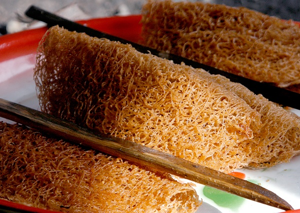
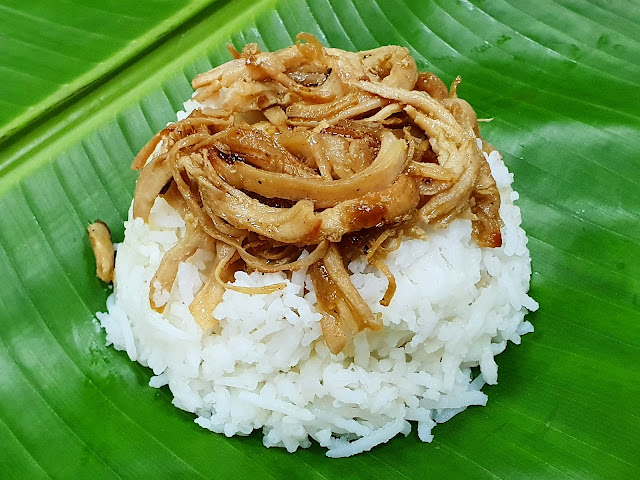

Explore Your Taste
The food of Sultan Kudarat is a "Halal-friendly" culinary map. It is a blend of the spicy, coconut-rich flavors of the Maguindanaon people and the savory, ginger-heavy traditions of the Visayan settlers.

The food of Sultan Kudarat is a "Halal-friendly" culinary map. It is a blend of the spicy, coconut-rich flavors of the Maguindanaon people and the savory, ginger-heavy traditions of the Visayan settlers.

A crispy, golden-brown snack made of ground rice and sugar, looking like a delicate mesh of fried noodles.

The "National Breakfast" of the region. Steamed rice topped with sautéed shredded chicken (Kagikit) wrapped in a banana leaf.

High-altitude Robusta and Arabica beans from the mountains of Sen. Ninoy Aquino.